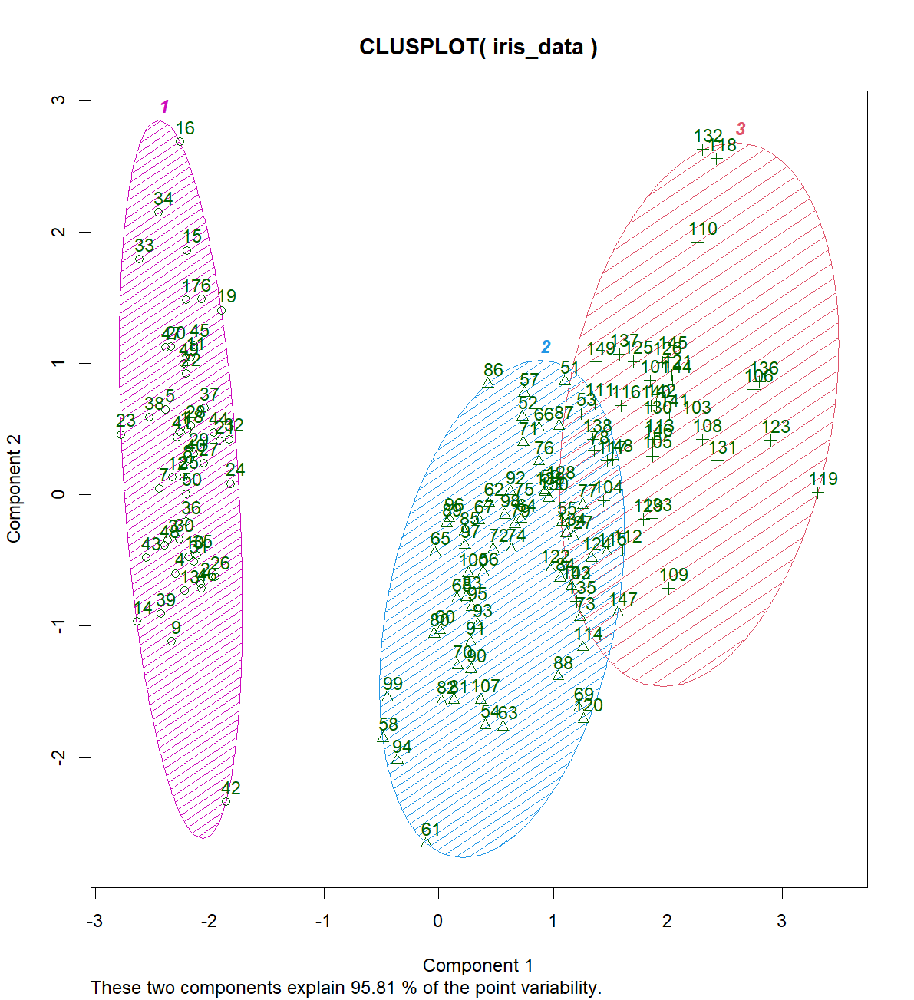

K-means 알고리즘은..
Centroid Based Clustering 기법 중 하나로, 데이터 포인트들을 K개의 군집으로 나누는 비지도 학습(unsupervised learning) 방법입니다. K-means 알고리즘은 다음과 같은 과정을 거쳐 데이터를 군집화합니다.
- 초기화: K개의 초기 중심점(centroid)을 무작위로 선택하거나, 데이터 포인트에서 무작위로 추출합니다.
- 할당: 각 데이터 포인트를 가장 가까운 중심점에 할당하여, K개의 군집을 생성합니다. 일반적으로 유클리디안 거리(Euclidean distance)를 사용하여 거리를 측정합니다.
- 업데이트: 각 군집의 중심점을 새롭게 계산합니다. 새로운 중심점은 해당 군집에 속한 데이터 포인트들의 평균 위치입니다.
- 수렴 여부 확인: 중심점의 위치가 더 이상 변하지 않거나, 미리 정한 반복 횟수에 도달할 때까지 2단계와 3단계를 반복합니다.
K-means 알고리즘은 간단하고 이해하기 쉬워 널리 사용되지만, 몇 가지 단점도 가지고 있습니다. 주요 단점으로는 다음과 같습니다.
- K값을 미리 설정해야 하는데, 이는 최적의 군집 개수를 알기 어려운 경우 문제가 될 수 있습니다.
- 초기 중심점 선택에 따라 결과가 달라질 수 있어, 여러 번 실행하여 최적의 결과를 찾아야 할 수도 있습니다.
- 군집의 모양이 원형이 아닌 경우나 군집 크기가 다른 경우, 성능이 저하될 수 있습니다.
이러한 단점에도 불구하고 K-means 알고리즘은 군집화에 사용되는 대표적인 방법 중 하나로 널리 적용되고 있습니다.
library(cluster)
iris_data <- iris[, -5]
# Apply K-means (K=3)
set.seed(42)
kmeans_result <- kmeans(iris_data, centers = 3, nstart = 20)
table(iris$Species, kmeans_result$cluster)
clusplot(iris_data, kmeans_result$cluster, color=TRUE, shade=TRUE, labels=2, lines=0) 1 2 3
setosa 50 0 0
versicolor 0 48 2
virginica 0 14 36